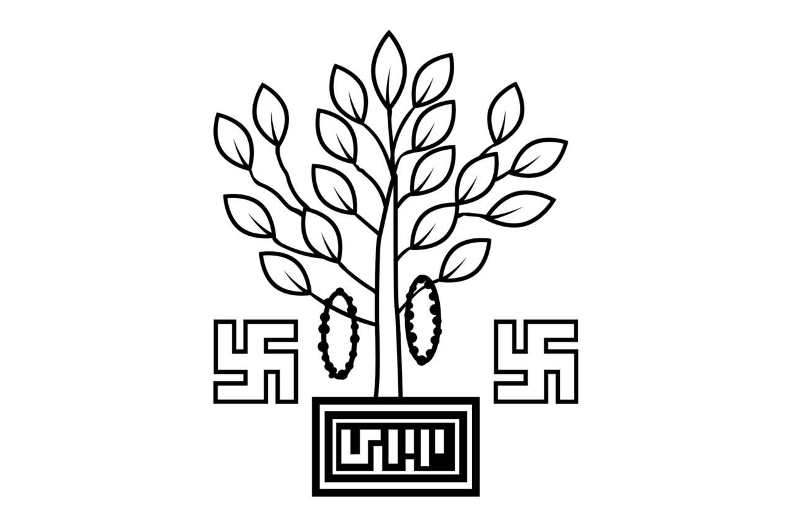

Bihar is one of the oldest and most historically important states of India. It is located in the eastern part of the country and shares its borders with Uttar Pradesh, Jharkhand, West Bengal, and Nepal. The capital city of Bihar is Patna, which is also one of the oldest continuously inhabited cities in the world. Bihar has played a very important role in the history, culture, education, religion, and politics of India. Bihar has a rich ancient history. In ancient times, the region was known as Magadha and became one of the most powerful kingdoms in India. The great Mauryan Empire developed in this region, with Pataliputra, present-day Patna, as its capital. Chandragupta Maurya established the Mauryan Empire, and his grandson Ashoka became one of the most famous rulers in Indian history. Ashoka promoted Buddhism and helped spread Buddhist teachings to many parts of Asia.